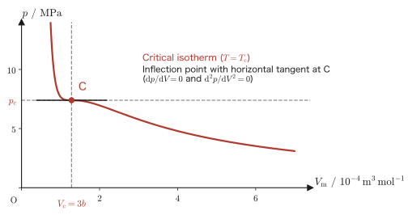
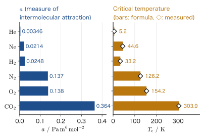

Chapter 24The Kinetic Theory of Gases and the van der Waals Equation of State
In the previous chapter, we studied the relations among the pressure, volume, and temperature of a gas as “rules found from experiment”: Boyle's law and Charles's law. The equation of state of an ideal gas, $pV=nRT$, which holds among the pressure $p$, volume $V$, amount of substance $n$, and absolute temperature $T$, was likewise introduced as an experimental fact. But what, after all, is “temperature”? What does that sensation of “hot” or “cold” that we feel when we touch something with our hands correspond to in the world of molecules?
In this chapter, we reconsider a gas through the model of the kinetic theory of gases, in which a gas is “an enormous number of tiny particles (molecules) flying around inside a container.” Using only the tools of mechanics learned in Part I (force, momentum, and impulse), we derive, without skipping a single line of algebraic manipulation, how the macroscopic quantity called pressure arises from the microscopic quantity that is the motion of each individual molecule. As a consequence, we arrive at one of the most beautiful results in all of thermodynamics: “absolute temperature is nothing other than a scale that measures the mean kinetic energy per molecule,” namely $\frac12m\overline{|\bm v|^2}=\frac32\frac{R}{N_{\mathrm A}}T$.
In the second half, in order to deal with a phenomenon that the ideal gas model cannot explain—a gas turns into a liquid when it is cooled or compressed—we introduce the van der Waals equation of state. We will see how, merely by adding to the equation of state of an ideal gas two “real effects” as corrections, namely the size of the molecules themselves and the intermolecular force, phenomena such as the liquefaction of a gas and the critical point appear naturally in the equations.
- The meaning of the zeroth law of thermodynamics—that the relation “thermal equilibrium” is transitive—and the reason why a thermometer can be used
- The kinetic theory of gases: we find the impulse and force exerted by a single molecule on a wall of the container from the change in momentum in mechanics, accumulate this over $N$ molecules to derive the equation for the pressure, and compare it with the equation of state of an ideal gas to obtain $\frac12m\overline{|\bm v|^2}=\frac32\frac{R}{N_{\mathrm A}}T$ (the relation between the mean kinetic energy of a molecule and the absolute temperature)
- The introduction of the Boltzmann constant $k_{\mathrm B}=R/N_{\mathrm A}$, and degrees of freedom and the law of equipartition of energy
- A concrete numerical calculation of the root-mean-square speed of molecules, taking Ar (argon) gas as an example
- The derivation of the van der Waals equation of state $(p+a/V^2)(V-b)=RT$, and the liquefaction of gases and the critical point (critical temperature, critical pressure, critical volume)
Source notes: Yasuhide Mochizuki, Physics Notes: Thermodynamics, pp. 11–17.
24.1 The Zeroth Law of Thermodynamics and Preparation for the Kinetic Theory of Gases
When we measure the temperature of a gas, we bring a thermometer into contact with the gas, wait for a while, and then read the scale. Why does this tell us the temperature of the gas itself? The following law makes the reason clear. First, let us explain the term “thermal equilibrium” that appears at the heart of the law.
Suppose that two systems are brought into contact through a heat-conducting wall (for example, by placing them in direct contact) and left for a sufficiently long time, and that the state of neither system changes any more. In this case, the two systems are said to be in thermal equilibrium. In this book, we write $\mathrm A\sim\mathrm B$ to express that system A and system B are in thermal equilibrium. Thermal equilibrium is a symmetric relation: “if A is in equilibrium with B, then B is also in equilibrium with A” ($\mathrm A\sim\mathrm B\Rightarrow\mathrm B\sim\mathrm A$). Also, when a single system alone is isolated from the outside and left for a sufficiently long time, and its state no longer changes, that system too is said to be in a thermal equilibrium state.
Law 24.1: Zeroth law of thermodynamics
Suppose that two thermodynamic systems A and B (see the box below) are in thermal equilibrium ($\mathrm A\sim\mathrm B$), and that system A, in the same state, is also in thermal equilibrium with another system C ($\mathrm A\sim\mathrm C$). Then systems B and C are also in thermal equilibrium ($\mathrm B\sim\mathrm C$), and the temperatures of B and C are equal.
This law guarantees that the quantity “temperature” can be defined without contradiction. Temperature is a quantity that systems in thermal equilibrium have in common, and systems in thermal equilibrium have equal temperatures. Moreover, when systems with equal temperatures are brought into contact, the state of neither of them changes.
What is a thermodynamic “system”?
A “system” is a lump of matter that is set apart as the object of consideration (for example, a gas in a container), and the outside of it is called the surroundings (the exterior). For details, see Section 23.5 and Section 26.1.
Intuition: Why can a thermometer be used?
In Law 24.1, let us choose a thermometer C as the common system. If we bring thermometer C into contact with the gas A whose temperature we want to measure and wait for a while, the two come to thermal equilibrium ($\mathrm C\sim\mathrm A$), and the scale of the thermometer indicates the temperature of gas A. Next, we bring the same thermometer C into contact with another gas B and wait; when the two have again reached thermal equilibrium ($\mathrm C\sim\mathrm B$), suppose that we read the scale and it shows the same value as before. Since thermal equilibrium is a symmetric relation, if we use Law 24.1 with the roles of “A, B, C” reinterpreted as “C, A, B,” we obtain “if $\mathrm C\sim\mathrm A$ and $\mathrm C\sim\mathrm B$, then $\mathrm A\sim\mathrm B$.” That is, A and B are at the same temperature, and nothing changes when they are brought into direct contact. Without bringing A and B into direct contact to check, we can judge whether they are at the same temperature merely by a comparison through the common thermometer C; this is the mechanism by which a thermometer works.
The name “zeroth law of thermodynamics” arose because, historically, the first and second laws of thermodynamics (studied in later chapters) were established first, and only afterward was it recognized that “in fact an independent axiom more fundamental than the first law is needed” (it is said to have been named by R. H. Fowler in the 1930s). Since logically it ought to come before the first law, the number “0” is assigned to it.
Why consider monatomic molecules?
In the discussion that follows, we mainly consider the monatomic molecules (molecules consisting of just one atom) of noble gases such as He (helium) and Ar (argon). Diatomic molecules such as $\mathrm{N_2}$ and $\mathrm{O_2}$, and polyatomic molecules such as $\mathrm{H_2O}$, can perform rotation and vibration in addition to translational motion (motion in which the position of the whole molecule changes), which complicates matters. A monatomic molecule has no degrees of freedom corresponding to rotation or vibration; since it has only a few degrees of freedom of motion and is simple, we start with it. (The degrees of freedom involving the rotation and vibration of polyatomic molecules are treated in Section 24.3 and Chapter 26.)
Example 24.1: Application of the zeroth law of thermodynamics
There are three containers A, B, and C of ideal gases with different volumes and amounts of substance, and the measured values of pressure and volume are as follows: A ($p_{\mathrm A}=2.0\times10^5\ \mathrm{Pa}$, $V_{\mathrm A}=1.0\times10^{-3}\ \mathrm{m^3}$, $n_{\mathrm A}=0.080\ \mathrm{mol}$), B ($p_{\mathrm B}=1.0\times10^5\ \mathrm{Pa}$, $V_{\mathrm B}=3.0\times10^{-3}\ \mathrm{m^3}$, $n_{\mathrm B}=0.120\ \mathrm{mol}$), C ($p_{\mathrm C}=3.0\times10^5\ \mathrm{Pa}$, $V_{\mathrm C}=2.0\times10^{-3}\ \mathrm{m^3}$, $n_{\mathrm C}=0.240\ \mathrm{mol}$). Suppose that we know separately that gases A and C are in thermal equilibrium ($\mathrm A\sim\mathrm C$). Use the zeroth law of thermodynamics to determine whether A and B are in thermal equilibrium (gas constant $R=8.31\ \mathrm{J/(mol\,K)}$).
Solution. We rewrite the equation of state of an ideal gas $pV=nRT$ (Chapter 23) in the form $T=pV/(nR)$ and find each temperature.
$$ T_{\mathrm A}=\frac{p_{\mathrm A}V_{\mathrm A}}{n_{\mathrm A}R}=\frac{(2.0\times10^5)\times(1.0\times10^{-3})}{0.080\times8.31}=\frac{2.0\times10^{2}}{0.6648}\approx 300.8\ \mathrm{K} $$ $$ T_{\mathrm B}=\frac{p_{\mathrm B}V_{\mathrm B}}{n_{\mathrm B}R}=\frac{(1.0\times10^5)\times(3.0\times10^{-3})}{0.120\times8.31}=\frac{3.0\times10^{2}}{0.9972}\approx 300.8\ \mathrm{K} $$ $$ T_{\mathrm C}=\frac{p_{\mathrm C}V_{\mathrm C}}{n_{\mathrm C}R}=\frac{(3.0\times10^5)\times(2.0\times10^{-3})}{0.240\times8.31}=\frac{6.0\times10^{2}}{1.9944}\approx 300.8\ \mathrm{K} $$The calculation shows that all three gases have the same temperature $T\approx300.8\ \mathrm K$. We derive the conclusion in the following order.
- Checking the premise: since systems in thermal equilibrium have equal temperatures (Law 24.1), under the premise “$\mathrm A\sim\mathrm C$” we must have $T_{\mathrm A}=T_{\mathrm C}$. The calculated result $T_{\mathrm A}=T_{\mathrm C}$ does not contradict this; it is consistent.
- The relation between B and C: we have $T_{\mathrm B}=T_{\mathrm C}$. Since systems with equal temperatures do not change their states when brought into contact (they are in thermal equilibrium), we can conclude that $\mathrm B\sim\mathrm C$.
- Applying Law 24.1: take C as the common system. From $\mathrm C\sim\mathrm A$ (the premise) and $\mathrm C\sim\mathrm B$ (determined in item 2), reading A, B, C in Law 24.1 as C, A, B respectively, we obtain $\mathrm A\sim\mathrm B$; that is, A and B are in thermal equilibrium.
In practice, it suffices to compute the temperatures independently from the equations of state of the three gases and compare them, and there is no need to actually bring A, B, and C into contact to check—this is the practical benefit of the zeroth law of thermodynamics.
Now let us set the stage for the kinetic theory of gases. As in Figure 24.1, suppose that a single monatomic molecule of mass $m\ [\mathrm{kg}]$ is inside a cubic container of side length $\ell\ [\mathrm m]$. Denote the velocity vector of this molecule by $\bm v=[v_x,v_y,v_z]$ ($\bm v$ is a boldface vector, and $v_x,v_y,v_z$ are its $x,y,z$ components, which are lightface scalars that can take positive or negative values). We assume that all the gas molecules in the container fly around while repeating perfectly elastic collisions with the walls of the container.
Definition 24.1: Perfectly elastic collision
A collision in which the speed of the object does not change before and after the collision is called a perfectly elastic collision. In terms of the coefficient of restitution $e$ learned in the mechanics of Part I (Section 2.6), this is a collision with $e=1$. When a molecule undergoes a perfectly elastic collision with a wall of the container, only the velocity component perpendicular to the wall reverses its direction (its magnitude does not change), and the velocity components parallel to the wall do not change.
24.2 Derivation of the Kinetic Theory of Gases—The Relation between Pressure and the Kinetic Energy of Molecules
Now let us actually derive the formula for the pressure. As we learned in Part I (Mechanics), when a body is acted on by a force and its momentum changes, the amount of the change equals the impulse received by the body (the product of the magnitude of the force and the time during which the force acted) (Section 2.2). The phenomenon of a gas molecule colliding with a wall can also be understood through this relation between momentum and impulse.
The model of the kinetic theory of gases: Four assumptions and notation
The results we are about to derive rest on the following four assumptions (the model of the kinetic theory of gases).
- Molecules are treated as particles (point masses) whose size is negligible.
- Molecules do not collide with one another, and the forces acting between molecules are also neglected. Hence a molecule moves in uniform rectilinear motion until it is reflected by a wall (this assumption is what later allows us to take the round-trip distance to be $2\ell$).
- Collisions between molecules and a wall are perfectly elastic collisions (Definition 24.1), and only the component of velocity perpendicular to the wall is reversed.
- The directions of the molecules' motion are not biased toward any particular direction but are scattered equally (isotropically) over all directions.
By Assumption 4, every wall experiences the same pressure (the pressure of a gas is the same on a wall facing any direction). It therefore suffices to focus on a single wall surface $S$ and find the pressure on it. In this chapter, to keep them distinct, we write the volume of the gas with the capital letter $V$ in lightface, and the velocity of a molecule with the lowercase boldface $\bm v$ (with components $v_x,v_y,v_z$).
Derivation: The force exerted on the wall $S$ by a single molecule
As in Figure 24.1, suppose that a molecule of mass $m$ collides with the wall $S$ (the right-hand face of the container, of area $S=\ell^2$) with an $x$ component of velocity $v_x$ directed toward the wall ($v_x\gt0$; we take the direction toward the wall as positive). By Definition 24.1 (perfectly elastic collision), the component of velocity perpendicular to the wall is reversed in direction without any change in magnitude. Therefore the $x$ component of the molecule's momentum changes from before to after the collision as follows:
$$ (\text{before collision})\ mv_x\ \longrightarrow\ (\text{after collision})\ -mv_x $$(The velocity components in the $y,z$ directions are parallel to the wall and therefore do not change.) By the relation between the change in momentum and the impulse (Section 2.2), the molecule has received from the wall the impulse $(-mv_x)-(mv_x)=-2mv_x$. By the law of action and reaction, the wall $S$ receives the impulse of the opposite sign from the molecule. Hence the impulse $I$ that the wall $S$ receives from the molecule (equal to the product $f\cdot t$ of the force the wall receives and the time during which that force acts) is
\begin{equation} I=f\cdot t=mv_x-(-mv_x)=2mv_x \label{eq:24-impulse} \end{equation}in a single collision.
∎
Getting the picture: How many collisions per second?
Gas molecules have very large speeds, roughly several hundred $\mathrm{m/s}$ to well over a thousand $\mathrm{m/s}$ at room temperature (we actually compute them in Illustration 24.1). So let us focus only on the motion in the $x$ direction of the one molecule we are watching. As in Figure 24.2, this molecule moves back and forth between the wall $S$ and the wall on its opposite side, colliding with $S$ repeatedly. Between one collision with $S$ and the moment, after reflection from the opposite wall, when it collides with $S$ again, the distance the molecule travels in the $x$ direction is a round trip across the side length $\ell$ of the container, that is, $2\ell$. At speed $v_x$, covering the distance $2\ell$ takes the time $\tau=2\ell/v_x$, so the frequency with which this molecule collides with the wall $S$ (the number of collisions per second) is the reciprocal of this time:
$$ \frac{1}{2\ell/v_x}=\frac{v_x}{2\ell}\ [\mathrm{s^{-1}}] $$Checking the units, we find $[\mathrm{m/s}]\times\left[\dfrac1{\mathrm m}\right]=[\mathrm{s^{-1}}]$, which agrees with the dimension “number of times per second.”
Multiplying this collision frequency $v_x/(2\ell)$ by the impulse $I=2mv_x$ produced in a single collision (Eq. \eqref{eq:24-impulse}) gives “the total impulse the wall $S$ receives per second.” This is precisely the time-averaged force $f$ that the wall $S$ receives from a single molecule (viewed another way, an impulse $I$ is delivered once in every period $\tau=2\ell/v_x$, so the time-averaged force is $f=I/\tau$; this is the same calculation):
\begin{equation} f=2mv_x\times\frac{v_x}{2\ell}=\frac{mv_x^2}{\ell} \label{eq:24-fsingle} \end{equation}Next, let us consider the case in which the container holds not one molecule but a great many. The constant giving the number of particles (molecules, atoms, etc.) contained in an amount of substance of $1\ \mathrm{mol}$ is called the Avogadro constant $N_{\mathrm A}$ (this expresses the relation “$1\ \mathrm{mol}=6.02\times10^{23}$ particles” familiar from high school chemistry in precise symbolic form). In CODATA 2018 (the value fixed by definition in the 2019 revision of the SI), $N_{\mathrm A}=6.022\,140\,76\times10^{23}\ \mathrm{mol^{-1}}$, which is an exact (defined) value. If the container holds a gas in the amount $n\ [\mathrm{mol}]$, the total number $N$ of gas molecules can be written as
\begin{equation} N=nN_{\mathrm A} \label{eq:24-Nmol} \end{equation}in terms of the amount of substance.
Caution: A bar (overline) denotes an average
From here on, symbols with a horizontal line drawn over the quantity, such as $\bar f$ and $\overline{v_x^2}$, will appear. This symbol (the overline, denoting an average) means “the value obtained by averaging that quantity over the $N$ molecules.” For example, $\overline{v_x^2}$ is the quantity obtained by adding up $v_x^2$ for every individual molecule (for the $k$th molecule it is written $(v_x^2)_k$) and dividing by $N$:
$$ \overline{v_x^2}=\frac1N\sum_{k=1}^{N}(v_x^2)_k $$Since the $N$ molecules fly about with different speeds and directions, the values of $f$ and $v_x^2$ differ from molecule to molecule; by considering the “average,” however, we can treat the behavior smoothed out over the whole container.
In Eq. \eqref{eq:24-fsingle}, $f=mv_x^2/\ell$ was the force per molecule, so the force $F$ that all $N$ molecules together exert on the wall $S$ is the average force per molecule, $\bar f$, multiplied by the number of molecules $N$:
\begin{equation} F=N\bar f=nN_{\mathrm A}\cdot\frac{m\overline{v_x^2}}{\ell} \label{eq:24-Fbar} \end{equation}Now, the square of the magnitude of the velocity vector $\bm v=[v_x,v_y,v_z]$ can be written, by the Pythagorean theorem (extended to three dimensions), as $|\bm v|^2=v_x^2+v_y^2+v_z^2$. Averaging both sides over the $N$ molecules in the container, we get
$$ \overline{|\bm v|^2}=\frac1N\sum_{k=1}^N(|\bm v|^2)_k=\frac1N\sum_{k=1}^N\left\{(v_x^2)_k+(v_y^2)_k+(v_z^2)_k\right\} $$ $$ =\frac1N\sum_{k=1}^N(v_x^2)_k+\frac1N\sum_{k=1}^N(v_y^2)_k+\frac1N\sum_{k=1}^N(v_z^2)_k=\overline{v_x^2}+\overline{v_y^2}+\overline{v_z^2} $$(We merely split the sum into three parts and recomputed it; no approximation has been used anywhere.)
Now, we may regard the gas molecules in the container as flying about irregularly (randomly) in all directions, with no bias toward any particular direction (Assumption 4). Therefore there is no statistical distinction among the $x,y,z$ directions, so that
\begin{equation} \overline{v_x^2}=\overline{v_y^2}=\overline{v_z^2} \label{eq:24-isotropy0} \end{equation}holds (this is called the isotropy of the gas). Substituting this into the previous equation shows that $\overline{|\bm v|^2}=3\,\overline{v_x^2}$, that is,
\begin{equation} \overline{v_x^2}=\frac13\overline{|\bm v|^2} \label{eq:24-isotropy} \end{equation}holds. Substituting this into Eq. \eqref{eq:24-Fbar}, we obtain
\begin{equation} F=nN_{\mathrm A}\cdot\frac13\cdot\frac{m\overline{|\bm v|^2}}{\ell}\ [\mathrm N] \label{eq:24-Ffinal} \end{equation}for the total force on the wall.
Caution: Unit check
Let us check the units that appear in the equations so far. The unit of force is $[\mathrm N]=[\mathrm{kg\,m/s^2}]$, and dividing it by an area $[\mathrm{m^2}]$ gives the unit of pressure, $[\mathrm{N/m^2}]=[\mathrm{Pa}]$ (pascal). Also, the product of a force $[\mathrm N]$ and a length $[\mathrm m]$ is $[\mathrm{N\cdot m}]=[\mathrm J]$ (joule, the unit of energy). The correspondence between these two units will appear naturally in the manipulations that follow.
Dividing both sides of Eq. \eqref{eq:24-Ffinal} by the area of the wall, $S=\ell^2\ [\mathrm{m^2}]$, we get
$$ \frac{F}{\ell^2}=nN_{\mathrm A}\cdot\frac13\cdot\frac{m\overline{|\bm v|^2}}{\ell^3}\ [\mathrm{N/m^2}] $$The left-hand side $F/\ell^2$ is the force per unit area, that is, the pressure itself. Multiplying both sides further by the volume of the container, $\ell^3\ [\mathrm{m^3}]$, we get
$$ F\cdot\ell=nN_{\mathrm A}\cdot\frac13\cdot m\overline{|\bm v|^2}\ [\mathrm{N\cdot m}] $$Letting $p\equiv F/\ell^2\ [\mathrm{Pa}]$ (the pressure) and $V\equiv\ell^3\ [\mathrm{m^3}]$ (the volume of the container), we obtain the relation
\begin{equation} pV=nN_{\mathrm A}\cdot\frac13\cdot m\overline{|\bm v|^2}\ [\mathrm{N\cdot m}] \label{eq:24-pV-kinetic} \end{equation}This is the equation for the pressure derived from the kinetic theory of gases (mechanics).
Now, for this monatomic ideal gas, the equation of state of an ideal gas $pV=nRT$ learned in Chapter 23 should hold as it stands (the kinetic theory of gases is a derivation from the microscopic point of view and must not contradict the macroscopic equation of state). Therefore the right-hand side of Eq. \eqref{eq:24-pV-kinetic} must be equal to $nRT$:
$$ nRT=nN_{\mathrm A}\cdot\frac13\cdot m\overline{|\bm v|^2} $$Dividing both sides by $n$ and rewriting the $\dfrac13$ on the right-hand side as $\dfrac23\times\dfrac12$, we obtain
$$ RT=N_{\mathrm A}\cdot\frac23\cdot\frac12m\overline{|\bm v|^2} \qquad\Longrightarrow\qquad \frac23\cdot\frac12m\overline{|\bm v|^2}=\frac{R}{N_{\mathrm A}}T $$and, multiplying both sides by $\dfrac32$, the relation
\begin{equation} \frac12m\overline{|\bm v|^2}=\frac32\cdot\frac{R}{N_{\mathrm A}}\cdot T \label{eq:24-key} \end{equation}is derived.
Formula 24.1: The relation between the mean kinetic energy of a molecule and the absolute temperature
In a monatomic ideal gas, the mean kinetic energy per molecule, $\frac12m\overline{|\bm v|^2}$, and the absolute temperature $T$ satisfy the relation
$$ \frac12m\overline{|\bm v|^2}=\frac32\cdot\frac{R}{N_{\mathrm A}}\cdot T $$That is, the absolute temperature is nothing other than a scale measuring the mean kinetic energy per molecule. Note that from the purely mechanical model of the kinetic theory of gases alone, the molecular meaning of the thermodynamic quantity “temperature” has been made clear.
Example 24.2: The force exerted on the wall by one molecule and by 1 mol in a container 10 cm on a side
A cubic container of side $\ell=0.10\ \mathrm m$ holds $1\ \mathrm{mol}$ of nitrogen $\mathrm{N_2}$ (molecular weight $28.0$; it is not a monatomic molecule, but here, in order to estimate magnitudes, we use the results of the kinetic theory of gases as they stand) at room temperature $T=300\ \mathrm K$. Estimate the order of magnitude of (a) the average force $\bar f$ that one molecule exerts on the wall and (b) the total force $F$ exerted by all $N=nN_{\mathrm A}$ molecules.
Solution. The mass of one molecule is $m=M/N_{\mathrm A}=(28.0\times10^{-3})/(6.02\times10^{23})\approx4.65\times10^{-26}\ \mathrm{kg}$. Combining Formula 24.1 (Eq. \eqref{eq:24-key}) with the isotropy relation, Eq. \eqref{eq:24-isotropy} ($\overline{v_x^2}=\frac13\overline{|\bm v|^2}$), we get
$$ \overline{v_x^2}=\frac13\overline{|\bm v|^2}=\frac13\times\frac{3RT}{mN_{\mathrm A}}=\frac{RT}{mN_{\mathrm A}} $$Substituting the numerical values, we get
$$ \overline{v_x^2}=\frac{RT}{mN_{\mathrm A}}=\frac{8.31\times300}{(4.65\times10^{-26})\times(6.02\times10^{23})}\approx8.91\times10^{4}\ \mathrm{m^2/s^2} $$From Eq. \eqref{eq:24-fsingle} ($f=mv_x^2/\ell$; here we use the mean value $\bar f=m\overline{v_x^2}/\ell$),
$$ \bar f=\frac{m\overline{v_x^2}}{\ell}=\frac{(4.65\times10^{-26})\times(8.91\times10^{4})}{0.10}\approx4.14\times10^{-20}\ \mathrm N $$so the force exerted by a single molecule is a very small value. On the other hand, for all $N=nN_{\mathrm A}=6.02\times10^{23}$ molecules together,
$$ F=N\bar f\approx(6.02\times10^{23})\times(4.14\times10^{-20})\approx2.49\times10^{4}\ \mathrm N $$Checking just the order of magnitude: from the equation of state of an ideal gas $pV=nRT$, the pressure is $p=nRT/\ell^3\approx(1\times8.31\times300)/(0.10)^3\approx2.49\times10^{6}\ \mathrm{Pa}$, and multiplying it by the area $\ell^2=0.01\ \mathrm{m^2}$ gives $F=p\ell^2\approx2.49\times10^{4}\ \mathrm N$, which agrees. The force of a single molecule is too small to measure, but when as many molecules as Avogadro's number are gathered together, the total force is large enough to actually push on the walls of the container ($\approx2.5\times10^4\ \mathrm N$, equivalent to the weight of a mass of about 2.5 metric tons). Note also that this pressure is about 25 atmospheres ($24.6\ \mathrm{atm}$, taking $1\ \mathrm{atm}=1.013\times10^5\ \mathrm{Pa}$), and the deviation from ideal gas behavior (about 1.5% when estimated with the van der Waals equation of Section 24.4) is small, so this is sufficient for an estimate of the order of magnitude.
What this equation does not yet tell us—a preview of Chapter 34
Eq. \eqref{eq:24-key} gives the relation between temperature and the value obtained by averaging the kinetic energies of the $N$ molecules, but it tells us nothing about how fast each individual molecule is flying (how the speeds are distributed). In reality, even in a gas at a single temperature, the molecules are distributed widely from very slow to very fast, and this way of distribution (Maxwell's velocity distribution law) is treated in Chapter 34.
Example 24.3: Following the derivation of the kinetic theory of gases numerically
Suppose a molecule of mass $m=5.0\times10^{-26}\ \mathrm{kg}$ is in a cubic container of side length $\ell=0.20\ \mathrm m$, and that the $x$ component of this molecule's velocity is $v_x=450\ \mathrm{m/s}$. Find numerically (a) the impulse $I$ produced when this molecule collides once with the wall $S$ [Eq. \eqref{eq:24-impulse}], (b) the number of collisions per second, and (c) the average force $f$ exerted on the wall $S$ [Eq. \eqref{eq:24-fsingle}].
Solution. (a) By Eq. \eqref{eq:24-impulse},
$$ I=2mv_x=2\times(5.0\times10^{-26})\times450=4.5\times10^{-23}\ \mathrm{kg\,m/s} $$(b) The collision frequency is
$$ \frac{v_x}{2\ell}=\frac{450}{2\times0.20}=1.125\times10^{3}\ \mathrm{s^{-1}} $$(c) By Eq. \eqref{eq:24-fsingle},
$$ f=\frac{mv_x^2}{\ell}=\frac{(5.0\times10^{-26})\times450^2}{0.20}=5.06\times10^{-20}\ \mathrm N $$(Check: multiplying the answer to (a) by the collision frequency in (b) gives the same value, $4.5\times10^{-23}\times1.125\times10^3=5.06\times10^{-20}\ \mathrm N$. Dividing (a) by the period $\tau=2\ell/v_x=2\times0.20/450=8.9\times10^{-4}\ \mathrm s$ also gives the same value.)
Example 24.4: Why does the average of $v_x^2$ appear, rather than the average of $v_x$?
What appeared in the derivation was not $\overline{v_x}$ but $\overline{v_x^2}$. What would happen if we had worked with $\overline{v_x}$ instead? Also, explain why it is $\overline{v_x^2}$ that determines the pressure.
Solution. Among the molecules in the container, equal numbers move in the $+x$ direction and in the $-x$ direction (because the motion is isotropic), so $v_x$ takes both positive and negative values. Therefore, when $v_x$ is averaged over the $N$ molecules, the contributions cancel and $\overline{v_x}=0$. If the force were proportional to $v_x$, the average force would have to vanish as well, but in fact the wall is pushed.
The reason is that the force pushing the wall is proportional not to $v_x$ but to $v_x^2$, as in $f=mv_x^2/\ell$. The quantity $v_x^2$ is always positive (or zero) regardless of the sign of $v_x$. A molecule heading toward the wall ($v_x\gt0$) collides with it and delivers an impulse. A molecule moving away from the wall ($v_x\lt0$), on the other hand, is eventually reflected by the opposite wall, has its direction reversed to the $+x$ direction, and then also collides with the wall $S$. Hence the fact that $v_x^2$ is positive regardless of direction is the reason the contributions do not cancel when summed over all the molecules, and the average $\overline{v_x^2}$ is a nonzero value ($\frac13\overline{|\bm v|^2}$) that produces the pressure.
Related simulator: Ideal Gas (Molecules in a Box, and Internal Energy, Enthalpy, and Entropy)
24.3 The Boltzmann Constant, Degrees of Freedom, and the Law of Equipartition of Energy
The combination $R/N_{\mathrm A}$ that appears in Eq. \eqref{eq:24-key} (Formula 24.1) is a universal constant that does not depend on the kind of gas or on the amount of substance. This constant is given its own name and symbol.
Definition 24.2: Boltzmann constant
The ratio of the gas constant $R$ to the Avogadro constant $N_{\mathrm A}$
\begin{equation} k_{\mathrm B}\equiv\frac{R}{N_{\mathrm A}} \label{eq:24-kB} \end{equation}is called the Boltzmann constant (named after the Austrian physicist L. Boltzmann, 1844–1906). Since the 2019 revision of the SI (International System of Units), its value itself has been fixed as
$$ k_{\mathrm B}=1.380\,649\times10^{-23}\ \mathrm{J/K}\qquad(\text{defined value, exact}) $$The Avogadro constant $N_{\mathrm A}=6.022\,140\,76\times10^{23}\ \mathrm{mol^{-1}}$ is also a defined value, and the gas constant is determined (as a derived value) from the product of these two, $R=k_{\mathrm B}N_{\mathrm A}=8.314\,462\,618\ldots\ \mathrm{J/(mol\,K)}$. That is, at present the values of $k_{\mathrm B}$ and $N_{\mathrm A}$ are fixed first, and $R$ is then determined from them (historically it was the other way around: $R$ and $N_{\mathrm A}$ were each measured independently, and then the ratio $k_{\mathrm B}=R/N_{\mathrm A}$ was calculated). As we will see later, the unit $\mathrm{J/K}$ is also the unit of heat capacity.
Using the Boltzmann constant, Formula 24.1 (Eq. \eqref{eq:24-key}) can be rewritten as
$$ \frac12m\overline{|\bm v|^2}=\frac32k_{\mathrm B}T $$in a concise form.
Formula 24.2: Internal energy of a monatomic ideal gas
Suppose the potential energy due to the intermolecular forces acting between the gas molecules can be neglected (it is very small compared with the kinetic energy of the molecules). Then the total kinetic energy of the $N=nN_{\mathrm A}$ molecules in the container is itself the internal energy $U$ of the gas:
\begin{equation} U=N\times\frac12m\overline{|\bm v|^2}=nN_{\mathrm A}\times\frac32\cdot\frac{R}{N_{\mathrm A}}\cdot T=\frac32nRT\ [\mathrm J] \label{eq:24-U} \end{equation}Let us verify this result from another point of view. In a monatomic ideal gas, a single molecule can move freely in the three directions $x,y,z$. In mechanical terms, specifying the state of motion of this molecule requires three mutually independent velocity components ($v_x,v_y,v_z$), and this is expressed by saying “the molecule has three degrees of freedom.”
Why does a monatomic molecule have three degrees of freedom?
Specifying the position of a single molecule requires the three coordinates $x,y,z$, and correspondingly there are also three independent directions of motion (velocity components). A monatomic molecule consists of just one atom, so it has no degrees of freedom corresponding to rotation (spinning) or to the stretching and contracting of the bond between atoms (vibration)—because for rotation or vibration to be meaningful, several atoms (particles) must be combined. As we will see in Chapter 26, a diatomic molecule such as $\mathrm{N_2}$ or $\mathrm{O_2}$ has rotational degrees of freedom in addition to the three translational ones, so the number of degrees of freedom increases, and its internal energy and heat capacity take values different from those of a monatomic molecule.
Combining Eq. \eqref{eq:24-isotropy0} (isotropy, $\overline{v_x^2}=\overline{v_y^2}=\overline{v_z^2}$) with $\frac12m\overline{|\bm v|^2}=\frac32k_{\mathrm B}T$ from Formula 24.1, we obtain
$$ \frac12m\overline{v_x^2}+\frac12m\overline{v_y^2}+\frac12m\overline{v_z^2}=\frac12m\overline{|\bm v|^2}=\frac32k_{\mathrm B}T $$and, moreover, the three terms on the left-hand side are equal to one another (since $\overline{v_x^2}=\overline{v_y^2}=\overline{v_z^2}$, we have $\frac12m\overline{v_x^2}=\frac12m\overline{v_y^2}=\frac12m\overline{v_z^2}$). Therefore it suffices to divide the right-hand side $\frac32k_{\mathrm B}T$ into three equal parts, which gives
\begin{equation} \frac12m\overline{v_x^2}=\frac12m\overline{v_y^2}=\frac12m\overline{v_z^2}=\frac12k_{\mathrm B}T=\frac12\cdot\frac{R}{N_{\mathrm A}}\cdot T\ [\mathrm J] \label{eq:24-equipartition} \end{equation}(Figure 24.4). In other words, exactly the same amount of energy, $\frac12k_{\mathrm B}T$, is assigned to the motion in each of the directions $x,y,z$.
Law 24.2: Law of equipartition of energy (monatomic molecules)
In a gas in thermal equilibrium, an equal amount of energy, $\frac12k_{\mathrm B}T$, is assigned to each degree of freedom of molecular motion (the law of equipartition of energy, also called the equipartition theorem). A monatomic molecule has three (translational) degrees of freedom, so its mean kinetic energy per molecule is $3\times\frac12k_{\mathrm B}T=\frac32k_{\mathrm B}T$.
Caution: Polyatomic molecules have more degrees of freedom
A polyatomic molecule, which is more complex than a monatomic one, has additional degrees of freedom of motion owing to rotation, vibration, and so on. Even so, the law of equipartition of energy (an amount $\frac12k_{\mathrm B}T$ for each degree of freedom) still holds. For example, for a diatomic molecule such as $\mathrm{N_2}$ or $\mathrm{O_2}$, two rotational degrees of freedom (rotation about the molecular axis is not counted) are added to the three translational ones, making five in total at room temperature. (The vibration corresponding to the stretching and contracting of the bond is hardly excited at room temperature because of a quantum effect. This topic is treated in Chapter 26 and Chapter 50.)
Formula 24.3: Internal energy of an ideal gas whose molecules have $f$ degrees of freedom
Let $f$ be the number of degrees of freedom (those that can be written as quadratic forms) of each molecule, and suppose the intermolecular forces can be neglected. Then, by the law of equipartition, the internal energy of $n\ [\mathrm{mol}]$ of the gas is
\begin{equation} U=N\times f\times\frac12k_{\mathrm B}T=\frac f2\,nRT\ [\mathrm J] \label{eq:24-Uf} \end{equation}For a monatomic molecule ($f=3$) this becomes $U=\frac32nRT$ of Eq. \eqref{eq:24-U}, and for a diatomic molecule at room temperature ($f=5$) it becomes $U=\frac52nRT$.
Toward the general equipartition theorem—a preview of Chapter 50
What we have shown here is the result for the simplest case, that of monatomic molecules. In fact, the rule “$\frac12k_{\mathrm B}T$ per degree of freedom” is known to be a special case of a more general law (the law of equipartition of energy) that holds not only for translational motion but also for rotation and vibration (more precisely, for all degrees of freedom whose kinetic or potential energy can be written as a quadratic form in the velocities or coordinates). Proving the general case requires the canonical distribution (Boltzmann factor) of statistical mechanics, which is treated in Chapter 50.
Illustration 24.1: Finding the root-mean-square speed of Ar gas
The molecular weight of argon (Ar) (a dimensionless relative value) is $39.9$, and its mass per mole (molar mass) is $M_{\mathrm{Ar}}=39.9\ \mathrm{g/mol}=39.9\times10^{-3}\ \mathrm{kg/mol}$. Ar is a monatomic gas (a noble gas). Let $\bm v$ be the velocity of a molecule of Ar gas. Solving Formula 24.1 (Eq. \eqref{eq:24-key})
$$ \frac12m\overline{|\bm v|^2}=\frac32\cdot\frac{R}{N_{\mathrm A}}\cdot T $$for $\overline{|\bm v|^2}$, we obtain
$$ \overline{|\bm v|^2}=\frac{3R}{mN_{\mathrm A}}T $$Here $m$ is the mass of a single Ar atom and $N_{\mathrm A}$ is the Avogadro constant, so their product $mN_{\mathrm A}$ is the mass per $1\ \mathrm{mol}$ of Ar, that is, it equals the molar mass $M_{\mathrm{Ar}}=39.9\times10^{-3}\ \mathrm{kg/mol}$. Therefore,
$$ \overline{|\bm v|^2}=\frac{3RT}{M_{\mathrm{Ar}}}=\frac{3\times8.31\times T}{39.9\times10^{-3}}\ [\mathrm{m^2/s^2}] $$Checking the units, $[\mathrm{J/kg}]=[\mathrm{N\cdot m/kg}]=[\mathrm{kg\,m/s^2\cdot m/kg}]=[\mathrm{m^2/s^2}]$, which agrees with the unit of the square of a speed. Taking the square root of both sides gives $\sqrt{\overline{|\bm v|^2}}$ (the root-mean-square speed, or rms speed; note that this is a slightly different quantity from the average speed $\overline{|\bm v|}$ itself). Substituting $T=290\ \mathrm K$, which is close to room temperature, we obtain
$$ \sqrt{\overline{|\bm v|^2}}=\sqrt{\frac{3\times8.31\times290}{39.9\times10^{-3}}}\approx425.7\ \mathrm{m/s} $$(Using $R=8.314\,462\,6\ \mathrm{J/(mol\,K)}$ gives $425.8\ \mathrm{m/s}$; the difference comes from the rounding of $R$.) We see that this is comparable to, or somewhat larger than, the speed of sound (about $340\ \mathrm{m/s}$ in air at room temperature).
Incidentally, as we will see in Chapter 34, the simple average $\overline{|\bm v|}$ of the speed $|\bm v|$ is $\sqrt{8/(3\pi)}\approx0.92$ times the rms speed, which here comes to about $392\ \mathrm{m/s}$ (the speed possessed by the largest number of molecules is about $0.82$ times the rms speed, about $348\ \mathrm{m/s}$). All of these are of the same order of magnitude, and it remains true that gas molecules at room temperature fly around at speeds of several hundred meters per second.
Example 24.5: Root-mean-square speed of N₂ molecules compared with Ar
For the nitrogen molecule $\mathrm{N_2}$ (molecular weight $28.0$), find the root-mean-square speed $\sqrt{\overline{|\bm v|^2}}$ at room temperature $T=300\ \mathrm K$ by a calculation like that of Illustration 24.1, and compare it with the value for Ar gas at the same temperature.
Solution. The molar mass of $\mathrm{N_2}$ is $M_{\mathrm{N_2}}=28.0\times10^{-3}\ \mathrm{kg/mol}$. Using the same formula as in Illustration 24.1,
$$ \sqrt{\overline{|\bm v|^2}}=\sqrt{\frac{3RT}{M_{\mathrm{N_2}}}}=\sqrt{\frac{3\times8.31\times300}{28.0\times10^{-3}}}\approx516.8\ \mathrm{m/s} $$Calculating for Ar at the same temperature $T=300\ \mathrm K$ as well (with $M_{\mathrm{Ar}}=39.9\times10^{-3}\ \mathrm{kg/mol}$), we get
$$ \sqrt{\overline{|\bm v|^2}}=\sqrt{\frac{3\times8.31\times300}{39.9\times10^{-3}}}\approx432.9\ \mathrm{m/s} $$Note that, by Eq. \eqref{eq:24-key}, if the temperature $T$ is the same for both gases then $m\overline{|\bm v|^2}$ (and hence $M\overline{|\bm v|^2}$) is constant, that is, $\overline{|\bm v|^2}\propto1/M$. The ratio for the two gases is therefore
$$ \frac{\sqrt{\overline{|\bm v|^2}}_{\mathrm{N_2}}}{\sqrt{\overline{|\bm v|^2}}_{\mathrm{Ar}}}=\sqrt{\frac{M_{\mathrm{Ar}}}{M_{\mathrm{N_2}}}}=\sqrt{\frac{39.9}{28.0}}\approx1.194 $$and indeed $516.8/432.9\approx1.194$ agrees. We see that $\mathrm{N_2}$, which has the smaller molar mass, flies around faster even at the same temperature. This also matches our intuition: even when the temperature is the same (= the mean kinetic energy per molecule is the same), a lighter molecule must fly around faster in order to have the same kinetic energy.
Example 24.6: The Boltzmann constant and the thermal energy at room temperature
(a) Compute $k_{\mathrm B}=R/N_{\mathrm A}$ from $R=8.31\ \mathrm{J/(mol\,K)}$ and $N_{\mathrm A}=6.02\times10^{23}\ \mathrm{mol^{-1}}$ (the rounded values used in ordinary calculations), and compare it with the defined value $1.380\,649\times10^{-23}\ \mathrm{J/K}$. (b) Find $k_{\mathrm B}T$ at room temperature $T=300\ \mathrm K$ in $\mathrm J$ and in $\mathrm{eV}$ ($1\ \mathrm{eV}=1.602\,176\,634\times10^{-19}\ \mathrm J$). (c) What is the mean kinetic energy per molecule, $\frac32k_{\mathrm B}T$, at that temperature?
Solution. (a) Dividing the rounded values,
$$ k_{\mathrm B}\approx\frac{8.31}{6.02\times10^{23}}=1.380\times10^{-23}\ \mathrm{J/K} $$which agrees with the defined value $1.380\,649\times10^{-23}\ \mathrm{J/K}$ to four digits (the relative error is about $0.02\%$. Since $R=8.31$ is a rounding of $8.3145$ and $N_{\mathrm A}=6.02\times10^{23}$ is a rounding of $6.022\times10^{23}$, a deviation of this size is due to rounding error).
(b) Using the defined value,
$$ k_{\mathrm B}T=(1.380\,649\times10^{-23})\times300=4.142\times10^{-21}\ \mathrm J $$ $$ k_{\mathrm B}T=\frac{4.142\times10^{-21}}{1.602\,176\,634\times10^{-19}}\ \mathrm{eV}=2.585\times10^{-2}\ \mathrm{eV}\approx0.026\ \mathrm{eV} $$(c) $\frac32k_{\mathrm B}T=1.5\times4.142\times10^{-21}=6.213\times10^{-21}\ \mathrm J\approx0.039\ \mathrm{eV}$.
The thermal energy at room temperature, $k_{\mathrm B}T\approx0.026\ \mathrm{eV}$, is far smaller than, for example, the band gap of silicon (about $1.1\ \mathrm{eV}$). The semiconductor story that thermal motion alone can hardly lift electrons from the valence band to the conduction band starts from this comparison of energy scales.
Example 24.7: Comparing the internal energies of Ar and N₂ (the difference in degrees of freedom)
Using Formula 24.3, $U=\frac f2nRT$, find and compare the internal energies of $1\ \mathrm{mol}$ of Ar (a monatomic molecule) at $300\ \mathrm K$ and $1\ \mathrm{mol}$ of $\mathrm{N_2}$ at $300\ \mathrm K$ (five degrees of freedom: three translational plus two rotational; the vibration is frozen out at room temperature) ($R=8.31\ \mathrm{J/(mol\,K)}$).
Solution. Since $f=3$ for Ar,
$$ U_{\mathrm{Ar}}=\frac32\times1\times8.31\times300=3.74\times10^{3}\ \mathrm J\approx3.74\ \mathrm{kJ} $$Since $f=5$ for $\mathrm{N_2}$,
$$ U_{\mathrm{N_2}}=\frac52\times1\times8.31\times300=6.23\times10^{3}\ \mathrm J\approx6.23\ \mathrm{kJ} $$The ratio is $U_{\mathrm{N_2}}/U_{\mathrm{Ar}}=5/3\approx1.67$. Even at the same temperature and for the same amount of substance, the molecule with more degrees of freedom has the larger internal energy, because energy is also distributed to the rotational motion. This also means that $\mathrm{N_2}$ requires more heat to raise its temperature by the same amount (its heat capacity is larger), which we will study in detail in Chapter 27.
Application: Why is Ar gas commonly used in industry?
Argon (Ar) is relatively abundant in air among the noble gases (about 0.93% by volume) and is extremely chemically inert (it hardly reacts with other substances), and for these reasons it is widely used in materials science and engineering. For example, in metal arc welding, the weld is covered with Ar gas (shielding gas) to prevent the high-temperature molten metal from reacting with oxygen and nitrogen in the air to form oxides and nitrides, which would impair the strength of the weld. Ar gas is also used in the processes of semiconductor crystal growth and sputtering (thin-film deposition) to create an atmosphere that causes no unwanted reactions. As calculated in Illustration 24.1, Ar gas molecules at room temperature fly around at a root-mean-square speed of around 400 meters per second, and it is precisely this vigorous thermal motion that is the reason Ar gas continually reaches every corner of the weld and of the surface of a growing thin film.
24.4 The van der Waals Equation of State and the Liquefaction of Gases
The kinetic theory of gases that we have studied so far was based on a model (the ideal gas) in which molecules are regarded as particles (point masses) of negligible size and no forces are assumed to act between molecules. A real gas, however, changes into a liquid when it is cooled or compressed sufficiently. For example, carbon dioxide $\mathrm{CO_2}$ gas liquefies when enough pressure is applied at temperatures below about $31\ °\mathrm C$ ($\approx304\ \mathrm K$). The equation of state of an ideal gas, $pV=nRT$, alone cannot explain at all a phenomenon such as the liquefaction of a gas.
The van der Waals equation of state, which we derive in the second half of this section, is an equation that approximately describes the p–V relation of a real gas. Figure 24.5 shows the relation between the pressure $p$ and the volume $V$ of $\mathrm{CO_2}$ given by this equation (the isotherms) for several temperatures (in this section $V$ denotes the volume per $1\ \mathrm{mol}$ of gas, that is, the molar volume $V_{\mathrm m}$). Let us follow the blue isotherm ($10\ °\mathrm C$). (i) In the region of large volume the system behaves as a gas, and the volume decreases smoothly as the pressure is raised. (ii) On further compression, a region appears in which the volume alone decreases greatly while the pressure hardly changes (stays horizontal)—here the gas gradually turns into liquid (the liquid–vapor coexistence state). (iii) Once everything has become liquid, the pressure now rises sharply for a slight change in volume (a liquid can hardly be compressed). We see that this shape differs clearly, on the small-volume side, from the simple inverse-proportion hyperbola given by the ideal gas equation $pV=nRT$ (shown superimposed in Figure 24.5 as a gray dotted line, for the ideal gas at $50\ °\mathrm C$).
![p–V diagram of CO2 (V is the molar volume). Five isotherms from the van der Waals equation, at 10 °C, 20 °C, the critical temperature (about 304 K), 40 °C, and 50 °C. The 10 °C and 20 °C isotherms, which lie below the critical temperature, have a trough and a peak (the dotted portions); in a real gas this stretch is replaced by a horizontal line representing liquid–vapor coexistence (fixed by the equal-area rule). The gray dashed line is the boundary of the liquid–vapor coexistence region (the coexistence dome), whose top is the critical point C. The hyperbola of the ideal gas at 50 °C is overlaid as a gray dotted line for comparison. The three regions (i) gas, (ii) liquid–vapor coexistence, and (iii) liquid are labeled along the 10 °C isotherm](figs/ch24_fig24-5.svg)
As the temperature is raised, the horizontal portion in (ii) (the liquid–vapor coexistence region) gradually becomes shorter, and at a certain temperature it finally shrinks to a single point. The temperature at which the coexistence region degenerates to exactly one point is called the critical temperature, and the pressure and volume at that point are called the critical pressure and the critical volume, respectively.
Definition 24.3: Critical temperature, critical pressure, and critical volume
The boundary temperature above which a gas no longer liquefies, however much pressure is applied, is called the critical temperature $T_{\mathrm c}$. Regarding the pressure $p$ as a function $p=f(V)$ of the volume $V$ (the isotherm with the temperature fixed at $T=T_{\mathrm c}$), the point on the critical isotherm where the coexistence region degenerates (the critical point, point C in Figures 24.5 and 24.6) is the point at which the two conditions
$$ \left.\frac{\dd f}{\dd V}\right|_{T=T_{\mathrm c}}=0,\qquad \left.\frac{\dd^2 f}{\dd V^2}\right|_{T=T_{\mathrm c}}=0 $$hold simultaneously. The pressure and volume at the critical point are called the critical pressure $p_{\mathrm c}$ and the critical volume $V_{\mathrm c}$, respectively. For $\mathrm{CO_2}$, the (measured) critical temperature is $T_{\mathrm c}=31.0\ °\mathrm C\ (\approx304\ \mathrm K)$.

Why do the first and second derivatives both vanish at the critical point?
On an isotherm below the critical temperature there are two points where $\dd p/\dd V=0$ (they are the trough (local minimum) and the peak (local maximum) visible on the $10\ °\mathrm C$ and $20\ °\mathrm C$ isotherms in Figure 24.5. A real gas behaves as if this stretch were replaced by a horizontal straight line (liquid–vapor coexistence, determined by the idea known as Maxwell's rule), but in the idealized formula itself a peak and a trough appear). As the temperature is raised, this local maximum and local minimum approach each other and coincide at exactly one point at $T=T_{\mathrm c}$. That the two extrema (a local maximum and a local minimum) merge at one point means that the graph of $p=f(V)$ at that point is “a horizontal inflection point, neither a trough nor a peak,” and this is related to the criterion for judging extrema by means of the Taylor expansion (University Mathematics, Section 4.5). When the first and second derivatives are both zero, whether the point is a local maximum or a local minimum is decided by the third derivative, and if $f'''\neq0$ then $p-p_{\mathrm c}\approx\frac{f'''}{6}(V-V_{\mathrm c})^3$, so that the point is not an extremum but a horizontal inflection point (for the van der Waals equation, using the result of Illustration 24.2, one can verify that $f'''(V_{\mathrm c})=-a/(81b^5)\lt0$). For $T\gt T_{\mathrm c}$ such extrema do not exist in the first place, and the isotherm is merely monotonically decreasing.
Now let us construct an equation of state that describes this phenomenon.
Formula 24.4: The van der Waals equation of state
\begin{equation} \left(p+\frac{a}{V^2}\right)(V-b)=RT \label{eq:24-vdw} \end{equation}We call this the van der Waals equation of state for a gas whose amount of substance is $1\ \mathrm{mol}$ (named after the Dutch physicist J. D. van der Waals, 1837–1923). $a,b$ are positive constants determined by the kind of gas (the van der Waals constants). In [1] and [2] below, we derive this equation by adding two corrections to the equation of state of an ideal gas.
In this section $V$ denotes the volume per $1\ \mathrm{mol}$ of gas (the molar volume $V_{\mathrm m}$, in units of $\mathrm{m^3/mol}$). For a gas of amount of substance $n\ [\mathrm{mol}]$, when $V$ is to be the total volume, replace $V\to V/n$ and write $\left(p+\dfrac{n^2a}{V^2}\right)(V-nb)=nRT$.
The van der Waals equation of state can be derived from the equation of state of an ideal gas, $pV=RT$ (for $1\ \mathrm{mol}$), by adding, as corrections, two effects that cannot be neglected for real molecules.
[1] Volume correction—the size of the molecules. In the ideal gas model, molecules have been treated as point masses of negligible size. Real gas molecules, however, have a finite size. Therefore, however large the pressure $p$ is made, the volume $V$ of the gas does not approach $0$ but only approaches a certain positive value $b$ (the volume that the molecules actually exclude, per $1\ \mathrm{mol}$ of gas) (Figure 24.7, left). The effective volume in which the molecules can move freely is thus considered to be $V-b$, the apparent volume $V$ minus $b$. Replacing $V$ in the ideal gas equation of state $pV=RT$ by $V-b$, we obtain
$$ p(V-b)=RT $$as the result.
$b$ is not the volume of the molecules themselves
Two molecules regarded as spheres of radius $r$ cannot bring their centers closer together than $2r$. Hence, for a single molecule, the region that the center of another molecule cannot enter is a sphere of radius $2r$, whose volume is $\frac{4\pi}{3}(2r)^3=8\times\frac{4\pi}{3}r^3$; that is, eight times the volume of one molecule, $v_0=\frac{4\pi}{3}r^3$. Dividing by two so as not to count a pair of molecules twice, we get $4v_0$ per molecule. Therefore, per $1\ \mathrm{mol}$, $b\approx4N_{\mathrm A}v_0=4N_{\mathrm A}\cdot\frac{4\pi}{3}r^3$; that is, $b$ is about four times $N_{\mathrm A}$ times the volume of a molecule itself (the excluded volume; we check the numerical value in Example 24.10).
[2] Pressure correction—the intermolecular force. Weak attractive forces (van der Waals forces) act between real gas molecules. Consider a molecule near the wall of the container. There are no molecules outside the wall, whereas many molecules are present on the inner side of the container (the side opposite the wall), so this molecule experiences, on average, an attractive force from the surrounding molecules directed so as to pull it back toward the interior of the container (Figure 24.7, right). As a result, the speed with which the molecule collides with the wall is slightly reduced by this attraction. Consequently, the actually measured pressure $p$ is smaller than the pressure that would hold if there were no intermolecular forces at all (the pressure that the kinetic theory of gases predicts as it stands).
The amount of this pressure decrease can be estimated as follows. The number of molecules striking a unit area of the wall per unit time is proportional to the number density of molecules $N/V$ (the pressure formula, Eq. \eqref{eq:24-pV-kinetic}, derived in Section 24.2 also expresses $p\propto N/V$). The momentum that each of them loses, as it approaches the wall, because of the attraction from the molecules on the inner side is also proportional to the density $N/V$ of the surrounding molecules. Therefore, the total decrease in pressure is considered to be proportional to the product of these two effects, the square of the density, $(N/V)^2\propto1/V^2$ (for $1\ \mathrm{mol}$, $N=N_{\mathrm A}$ is constant, so it is the square of a quantity inversely proportional to $V$, that is, $1/V^2$). If we put the pressure decrease equal to $a/V^2$ ($a$ is a positive constant, per $1\ \mathrm{mol}$ of gas), the “ideal” pressure in the absence of intermolecular forces is $p+a/V^2$, which is larger than the actually measured pressure $p$ by $a/V^2$.
Using this $p+a/V^2$ in place of $p$ in the equation obtained in [1], we have
$$ \left(p+\frac{a}{V^2}\right)(V-b)=RT $$which is the van der Waals equation of state, Eq. \eqref{eq:24-vdw}.
The ideal gas limit—$a=0$ and $b=0$, or $V\to\infty$
In Eq. \eqref{eq:24-vdw}, if only the intermolecular force is neglected ($a=0$) we get $p(V-b)=RT$, and if only the size of the molecules is neglected ($b=0$) we get $(p+a/V^2)V=RT$. Neither of these is yet the ideal gas equation. Only when both are neglected ($a=0$ and $b=0$) do we properly return to $pV=RT$ (the equation of state of an ideal gas). Moreover, even with $a,b$ retained, in the limit of very large volume $V$ (the limit of a very dilute gas) we have $a/V^2\to0$ and $b/V\to0$, so the equation again approaches the ideal gas equation. This corresponds to the intuition that the more dilute the gas, the more negligible the effects of molecular size and intermolecular forces become in relative terms (we check this numerically in Example 24.11).
Illustration 24.2: Expressing the critical volume, critical pressure, and critical temperature in terms of the van der Waals constants
Based on the van der Waals equation of state (Eq. \eqref{eq:24-vdw}), let us express the critical volume $V_{\mathrm c}$, the critical pressure $p_{\mathrm c}$, and the critical temperature $T_{\mathrm c}$ at the temperature $T=T_{\mathrm c}$ (the critical temperature) in terms of the van der Waals constants $a,b$.
Solution. Solving Eq. \eqref{eq:24-vdw} for $p$, at $T=T_{\mathrm c}$ we have
$$ p(V)=\frac{RT_{\mathrm c}}{V-b}-\frac{a}{V^2} $$(use the quotient rule for differentiation from University Mathematics, Section 3.2, or simply treat $(V-b)^{-1}$ as a power of the single variable $V-b$ and differentiate it as such). Differentiating this once and twice with respect to $V$, we obtain
$$ \frac{\dd}{\dd V}p(V)=-\frac{RT_{\mathrm c}}{(V-b)^2}+\frac{2a}{V^3}\qquad\cdots\ ① $$ $$ \frac{\dd^2}{\dd V^2}p(V)=\frac{2RT_{\mathrm c}}{(V-b)^3}-\frac{6a}{V^4}\qquad\cdots\ ② $$By Definition 24.3, at the critical point $V=V_{\mathrm c}$ both ① and ② become zero, so
$$ \begin{cases} \dfrac{RT_{\mathrm c}}{(V_{\mathrm c}-b)^2}=\dfrac{2a}{V_{\mathrm c}^{3}} & \cdots\ ①'\\[2mm] \dfrac{2RT_{\mathrm c}}{(V_{\mathrm c}-b)^3}=\dfrac{6a}{V_{\mathrm c}^{4}} & \cdots\ ②' \end{cases} $$hold. Dividing ②′ by ①′ side by side (divide the left-hand sides by each other and the right-hand sides by each other), we get
$$ \frac{2}{V_{\mathrm c}-b}=\frac{3}{V_{\mathrm c}} \qquad\Longleftrightarrow\qquad \frac{V_{\mathrm c}-b}{2}=\frac{V_{\mathrm c}}{3} $$(in this calculation we equate the ratio of the left-hand sides, $\dfrac{2RT_{\mathrm c}/(V_{\mathrm c}-b)^3}{RT_{\mathrm c}/(V_{\mathrm c}-b)^2}=\dfrac{2}{V_{\mathrm c}-b}$, with the ratio of the right-hand sides, $\dfrac{6a/V_{\mathrm c}^4}{2a/V_{\mathrm c}^3}=\dfrac{3}{V_{\mathrm c}}$. The rearrangement that follows takes the reciprocal of both sides). Solving this for $V_{\mathrm c}$ gives $3(V_{\mathrm c}-b)=2V_{\mathrm c}$; that is, we obtain
\begin{equation} V_{\mathrm c}=3b \label{eq:24-Vc} \end{equation}Next, we substitute this $V_{\mathrm c}=3b$ into ①′. Noting that $V_{\mathrm c}-b=3b-b=2b$ and $V_{\mathrm c}^3=(3b)^3=27b^3$, we obtain
$$ \frac{RT_{\mathrm c}}{(2b)^2}=\frac{2a}{27b^3} \qquad\Longrightarrow\qquad T_{\mathrm c}=\frac{2a}{27b^3}\times\frac{(2b)^2}{R}=\frac{2a}{27b^3}\times\frac{4b^2}{R}=\frac{8a}{27Rb} $$That is,
\begin{equation} T_{\mathrm c}=\frac{8a}{27Rb} \label{eq:24-Tc} \end{equation}Furthermore, substituting these into the expression for $p(V)$, we obtain
$$ p_{\mathrm c}=\frac{RT_{\mathrm c}}{V_{\mathrm c}-b}-\frac{a}{V_{\mathrm c}^2}=\frac{R}{2b}\times\frac{8a}{27Rb}-\frac{a}{(3b)^2}=\frac{4a}{27b^2}-\frac{a}{9b^2}=\frac{4a}{27b^2}-\frac{3a}{27b^2} $$That is,
\begin{equation} p_{\mathrm c}=\frac{a}{27b^2} \label{eq:24-pc} \end{equation}Substituting the van der Waals constants $a=0.364\ \mathrm{Pa\,m^6/mol^2}$ and $b=4.27\times10^{-5}\ \mathrm{m^3/mol}$ (the values for $\mathrm{CO_2}$) from Table 24.1, we obtain
$$ V_{\mathrm c}=3b\approx1.28\times10^{-4}\ \mathrm{m^3/mol},\qquad T_{\mathrm c}=\frac{8a}{27Rb}\approx303.9\ \mathrm K,\qquad p_{\mathrm c}=\frac{a}{27b^2}\approx7.39\times10^{6}\ \mathrm{Pa} $$Here we used $R=8.31\ \mathrm{J/(mol\,K)}$. The values $T_{\mathrm c}\approx303.9\ \mathrm K\ (\approx30.8\ °\mathrm C)$ and $p_{\mathrm c}\approx7.39\ \mathrm{MPa}$ agree well with the measured critical point of $\mathrm{CO_2}$ ($31.0\ °\mathrm C$, about $7.4\ \mathrm{MPa}$).
Quantitative limits of the van der Waals equation—the critical volume does not match
The constants $a,b$ can be determined, for example, by matching them to the measured values $T_{\mathrm c},p_{\mathrm c}$ at the critical point, using $b=RT_{\mathrm c}/(8p_{\mathrm c})$ and $a=27R^2T_{\mathrm c}^2/(64p_{\mathrm c})$, which are obtained by solving Eqs. \eqref{eq:24-Tc} and \eqref{eq:24-pc} for $a,b$. With the constants fixed in this way, $T_{\mathrm c}$ and $p_{\mathrm c}$ agree with experiment (since we chose the constants so that they would). The critical volume, however, is a different matter. For $\mathrm{CO_2}$, Eq. \eqref{eq:24-Vc} gives $V_{\mathrm c}=3b\approx1.28\times10^{-4}\ \mathrm{m^3/mol}$, whereas the measured critical volume is about $9.4\times10^{-5}\ \mathrm{m^3/mol}$, so the value from the equation is about 40% larger. The same discrepancy appears in the critical compression factor (compressibility factor) $p_{\mathrm c}V_{\mathrm c}/(RT_{\mathrm c})$. In the van der Waals equation, $\frac{p_{\mathrm c}V_{\mathrm c}}{RT_{\mathrm c}}=\frac{a}{27b^2}\cdot3b\cdot\frac{27Rb}{8a}\cdot\frac1R=\frac38=0.375$ for every gas, whereas the measured value for a real gas is about $0.27$ in the case of $\mathrm{CO_2}$. Thus the van der Waals equation explains the liquefaction of gases and the critical point well at a qualitative level, but quantitatively it is only an approximate equation, and not every quantity agrees with experiment. This limitation, and the method of rewriting the equation in a universal form independent of the gas (the principle of corresponding states), are treated in Chapter 25.
| Gas | $a\ [\mathrm{Pa\,m^6/mol^2}]$ | $b\ [\mathrm{m^3/mol}]$ |
|---|---|---|
| He | $0.003\,46$ | $2.37\times10^{-5}$ |
| Ne | $0.0214$ | $1.71\times10^{-5}$ |
| $\mathrm{H_2}$ | $0.0248$ | $2.66\times10^{-5}$ |
| $\mathrm{N_2}$ | $0.137$ | $3.87\times10^{-5}$ |
| $\mathrm{O_2}$ | $0.138$ | $3.19\times10^{-5}$ |
| $\mathrm{CO_2}$ | $0.364$ | $4.27\times10^{-5}$ |

Example 24.8: Which is easier to liquefy, H₂ or CO₂?
Using the van der Waals constants in Table 24.1, calculate the critical temperatures $T_{\mathrm c}=8a/(27Rb)$ (Eq. \eqref{eq:24-Tc}) of hydrogen $\mathrm{H_2}$ and carbon dioxide $\mathrm{CO_2}$, and answer which gas is easier to liquefy (under the same pressure conditions).
Solution. From Table 24.1, for $\mathrm{H_2}$: $a=0.0248\ \mathrm{Pa\,m^6/mol^2}$, $b=2.66\times10^{-5}\ \mathrm{m^3/mol}$. For $\mathrm{CO_2}$: $a=0.364\ \mathrm{Pa\,m^6/mol^2}$, $b=4.27\times10^{-5}\ \mathrm{m^3/mol}$. Substituting each of these, we obtain
$$ T_{\mathrm c}(\mathrm{H_2})=\frac{8\times0.0248}{27\times8.31\times2.66\times10^{-5}}\approx33.2\ \mathrm K $$ $$ T_{\mathrm c}(\mathrm{CO_2})=\frac{8\times0.364}{27\times8.31\times4.27\times10^{-5}}\approx303.9\ \mathrm K $$Thus $T_{\mathrm c}(\mathrm{CO_2})\gt T_{\mathrm c}(\mathrm{H_2})$. A higher critical temperature means that the gas can still be liquefied at higher temperatures (that is, it is easier to liquefy), so $\mathrm{CO_2}$ is easier to liquefy than $\mathrm{H_2}$. This corresponds to the fact that $\mathrm{CO_2}$ has the larger intermolecular force (van der Waals constant $a$)—the more strongly the molecules attract one another, the more readily they condense into a liquid, even at higher temperatures and lower pressures.
Example 24.9: How does the critical point change when $a$ is increased?
Suppose that, of the van der Waals constants, only $a$ is doubled ($b$ is left unchanged). By what factor do $V_{\mathrm c}$, $T_{\mathrm c}$, and $p_{\mathrm c}$ each change? Answer from the equations. Also state the physical meaning of the result.
Solution. From Eqs. \eqref{eq:24-Vc}, \eqref{eq:24-Tc}, and \eqref{eq:24-pc}, $V_{\mathrm c}=3b$ does not contain $a$, so it does not change (a factor of 1). Both $T_{\mathrm c}=8a/(27Rb)$ and $p_{\mathrm c}=a/(27b^2)$ are proportional to $a$, so under $a\to2a$ both $T_{\mathrm c}$ and $p_{\mathrm c}$ double.
Meaning: $a$ expresses the strength of the attraction between molecules. When the attraction is stronger, the molecules can attract one another and condense even at higher temperatures (states in which the thermal motion of the molecules is more vigorous), so the critical temperature $T_{\mathrm c}$ becomes higher (the gas becomes easier to liquefy) and the critical pressure also becomes higher. On the other hand, the critical volume $V_{\mathrm c}$ is determined only by the molecular size $b$. (The difference between $\mathrm{H_2}$ and $\mathrm{CO_2}$ in Example 24.8 is also due mainly to the difference in the magnitude of $a$.)
Example 24.10: Estimating the size of a $\mathrm{CO_2}$ molecule from $b$
Using the relation $b\approx4N_{\mathrm A}\cdot\frac{4\pi}{3}r^3$ ($r$ is the molecular radius), estimate the molecular radius $r$ from $b=4.27\times10^{-5}\ \mathrm{m^3/mol}$ for $\mathrm{CO_2}$ in Table 24.1 ($N_{\mathrm A}=6.022\times10^{23}\ \mathrm{mol^{-1}}$).
Solution. Solving $b=4N_{\mathrm A}\cdot\frac{4\pi}{3}r^3=\frac{16\pi}{3}N_{\mathrm A}r^3$ for $r^3$, we obtain
$$ r^3=\frac{3b}{16\pi N_{\mathrm A}}=\frac{3\times(4.27\times10^{-5})}{16\pi\times(6.022\times10^{23})}=\frac{1.281\times10^{-4}}{3.027\times10^{25}}\approx4.23\times10^{-30}\ \mathrm{m^3} $$Therefore, we obtain
$$ r=\left(4.23\times10^{-30}\right)^{1/3}\ \mathrm m\approx1.62\times10^{-10}\ \mathrm m=0.16\ \mathrm{nm} $$This is a reasonable value for the size of an atom or a small molecule (for example, atoms are about $0.1\ \mathrm{nm}$ in size).
Example 24.11: Confirming that the equation approaches the ideal gas equation as $V\to\infty$
Confirm that Eq. \eqref{eq:24-vdw} agrees exactly with the equation of state of an ideal gas when $a=0$ and $b=0$, confirm the form of the equation when only $a=0$ and when only $b=0$, and confirm that, even with $a,b$ retained, $pV\to RT$ in the limit $V\to\infty$.
Solution. Solving Eq. \eqref{eq:24-vdw} for $p$ gives $p=\dfrac{RT}{V-b}-\dfrac{a}{V^2}$. If only $a=0$, then $p=RT/(V-b)$, that is, $p(V-b)=RT$ (the very equation of [1]). If only $b=0$, then $p=RT/V-a/V^2$, that is, $(p+a/V^2)V=RT$. Neither of these is $pV=RT$. Only when both are set to zero, $a=b=0$, do we obtain $p=RT/V$, that is, $pV=RT$, in agreement with the ideal gas equation. Moreover, examining $pV/(RT)$ in the limit $V\to\infty$, we find
$$ \lim_{V\to\infty}\frac{pV}{RT}=\lim_{V\to\infty}\frac1{RT}\left(\frac{RTV}{V-b}-\frac aV\right)=\lim_{V\to\infty}\left(\frac{1}{1-b/V}-\frac{a}{RTV}\right)=\frac{1}{1-0}-0=1 $$where we used $b/V\to0$ and $a/(RTV)\to0$ as $V\to\infty$. Thus, as $V\to\infty$ (the limit of an extremely dilute gas), $pV\to RT$; that is, we confirm that the equation approaches that of an ideal gas.
Application: Liquefaction of gases and its industrial use
The critical temperature is an important quantity that gives the boundary of whether a gas can be liquefied. For example, methane ($\mathrm{CH_4}$), the main component of natural gas, has a low critical temperature of $-82.6\,°\mathrm C$ and cannot be liquefied at room temperature by compression alone. For this reason, liquefied natural gas (LNG) is cooled under atmospheric pressure to its boiling point of about $-162\,°\mathrm C$ and transported by ship. Conversely, $\mathrm{CO_2}$ has a critical temperature close to room temperature ($31.0\,°\mathrm C$), so it can be liquefied near room temperature simply by applying sufficient pressure, and it can be filled, still in the liquefied state, relatively easily into fire extinguishers, cylinders for carbonated drinks, and the like. Cleaning and extraction techniques in the field of materials processing that use supercritical $\mathrm{CO_2}$ ($\mathrm{CO_2}$ in the state beyond the critical point, in which the distinction between gas and liquid disappears) as a solvent are also applications of this physics of the critical point.
24.5 Summary and Exercises
24.5.1 Summary
- Zeroth law of thermodynamics (Law 24.1): if systems A and B are in thermal equilibrium, and A and system C are also in thermal equilibrium, then B and C are also in thermal equilibrium, and their temperatures are equal. This is the logical basis for the statement that “we may use a thermometer.”
- Kinetic theory of gases: finding, from the change in momentum, the impulse and force that molecules undergoing perfectly elastic collisions (Definition 24.1) exert on a wall, and summing over $N$ molecules, we obtain $pV=nN_{\mathrm A}\cdot\frac13m\overline{|\bm v|^2}$ (Eq. \eqref{eq:24-pV-kinetic}). Comparing with the ideal gas law $pV=nRT$, we derive Formula 24.1 (Eq. \eqref{eq:24-key}), $\frac12m\overline{|\bm v|^2}=\frac32\frac{R}{N_{\mathrm A}}T$—absolute temperature is a scale for the mean kinetic energy per molecule.
- Boltzmann constant $k_{\mathrm B}=R/N_{\mathrm A}=1.380\,649\times10^{-23}\ \mathrm{J/K}$ (Definition 24.2; an exact defined value in the 2019 SI). The internal energy of a monatomic ideal gas is $U=\frac32nRT$ (Formula 24.2).
- A monatomic molecule has three degrees of freedom (translation in the $x,y,z$ directions), and each of them is allotted the same energy $\frac12k_{\mathrm B}T$ (the law of equipartition of energy, Law 24.2). For a gas whose molecules have $f$ degrees of freedom, $U=\frac f2nRT$ (Formula 24.3). The proof of the general equipartition theorem (including rotation and vibration) is given in Chapter 50.
- Real gases liquefy at low temperature and high pressure. The van der Waals equation of state (Formula 24.4), $(p+a/V^2)(V-b)=RT$ ($V$ is the molar volume), is the ideal gas equation with two effects added to it as corrections: the finite size of molecules (the volume correction $b$, the excluded volume) and the attraction between molecules (the pressure correction $a/V^2$). At the critical point (Definition 24.3), $\dd p/\dd V=0$ and $\dd^2p/\dd V^2=0$ hold simultaneously, and we obtain $V_{\mathrm c}=3b$, $T_{\mathrm c}=8a/(27Rb)$, $p_{\mathrm c}=a/(27b^2)$ (Eqs. \eqref{eq:24-Vc}–\eqref{eq:24-pc}). For $\mathrm{CO_2}$, $T_{\mathrm c}\approx304\ \mathrm K$ and $p_{\mathrm c}\approx7.39\ \mathrm{MPa}$ agree well with the measured values, but the critical volume does not agree with experiment (Chapter 25).
- The result obtained in this chapter, “the mean kinetic energy per molecule,” does not go so far as to tell us the distribution of the speeds of individual molecules. That distribution (Maxwell's velocity distribution law) is treated in Chapter 34. The general proof of the law of equipartition of energy (using the canonical distribution of statistical mechanics) is treated in Chapter 50.
24.5.2 Exercises
Exercise 24.1: Mass of one Ar molecule
Using the Avogadro constant $N_{\mathrm A}=6.022\times10^{23}\ \mathrm{mol^{-1}}$, find the mass $m$ of one molecule of argon (Ar, molecular weight $39.9$).
Hint: Recall that the molecular weight is the mass per $1\ \mathrm{mol}$, in $[\mathrm{g/mol}]$.
Exercise 24.2: Ratio of the root-mean-square speeds of He gas and Ar gas
For He gas (molecular weight $4.00$) and Ar gas (molecular weight $39.9$) at the same temperature, find the ratio $\sqrt{\overline{|\bm v|^2}}_{\mathrm{He}}\big/\sqrt{\overline{|\bm v|^2}}_{\mathrm{Ar}}$ of the root-mean-square speeds $\sqrt{\overline{|\bm v|^2}}$.
Hint: As in Example 24.5, use the fact that, in Eq. \eqref{eq:24-key}, $M\overline{|\bm v|^2}$ is constant when the temperature is the same.
Exercise 24.3: Physical meaning of the van der Waals constants $a,b$
Explain in your own words what property of real gas molecules each of the constants $a$ and $b$ appearing in the van der Waals equation of state $(p+a/V^2)(V-b)=RT$ corrects for.
Hint: Review the explanations in items [1] and [2] of Section 24.4 and Figure 24.7.
Exercise 24.4: Why does a gas not liquefy above the critical temperature?
Explain why $\mathrm{CO_2}$ does not liquefy, however much the pressure is raised, as long as it is kept at a temperature higher than the critical temperature (about $31\ °\mathrm C$), using the change in the shape of the family of isotherms drawn in Figure 24.5 (what happens to the liquid–vapor coexistence region as the temperature is raised).
Hint: Recall the condition for the critical point in Definition 24.3 and the shape of the isotherms for $T\gt T_{\mathrm c}$.
Exercise 24.5: Re-deriving $C_{V,\mathrm m}=\frac32R$ from $U=\frac32nRT$
From the internal energy of a monatomic ideal gas, $U=\frac32nRT$ (Formula 24.2), find the molar heat capacity at constant volume $C_{V,\mathrm m}\equiv\dfrac1n\left(\dfrac{\partial U}{\partial T}\right)_V$. Here $\left(\dfrac{\partial U}{\partial T}\right)_V$ means differentiating $U$ with respect to $T$ alone while keeping the volume $V$ constant (partial differentiation; University Mathematics, Section 6.2).
Hint: Simply differentiate $U$ with respect to $T$ (treating $n$ as a constant).
Exercise 24.6: Convergence to the ideal gas equation when $V$ is very large
In the van der Waals equation of state (Eq. \eqref{eq:24-vdw}), when the volume $V$ is very large compared with the constants $a,b$ ($V\gg b$, $a/V^2\ll p$), show by a concrete approximate calculation how the equation approaches the equation of state of an ideal gas, $pV\approx RT$.
Hint: Apart from the limit calculation of Example 24.11, try approximating in more detail (up to the first-order correction term) by using $1/(1-b/V)\approx1+b/V$ (an approximation valid when $b/V$ is small).
Exercise 24.7: Change in the internal energy of diatomic molecules
When $1\ \mathrm{mol}$ of oxygen $\mathrm{O_2}$ (a diatomic molecule, with five degrees of freedom at room temperature) is warmed from $300\ \mathrm K$ to $350\ \mathrm K$, what is the increase $\Delta U$ in its internal energy? Compare it also with $\Delta U$ for $1\ \mathrm{mol}$ of Ar under the same conditions ($R=8.31\ \mathrm{J/(mol\,K)}$).
Hint: Use Formula 24.3, $U=\frac f2nRT$.
24.5.3 References
- Yasuhide Mochizuki, Physics Notes: Thermodynamics (handwritten lecture notes, in Japanese). The source of this chapter.
- Sen Harashima, Netsurikigaku, Tōkei Rikigaku [Thermodynamics and Statistical Mechanics], Baifukan (in Japanese).
- H. B. Callen, Thermodynamics and an Introduction to Thermostatistics (Wiley).
- P. W. Atkins, J. de Paula, J. Keeler, Atkins' Physical Chemistry, 11th ed., Oxford University Press, 2018. A standard physical chemistry textbook that includes a table of van der Waals constants.
- R. P. Feynman, R. B. Leighton, M. Sands, The Feynman Lectures on Physics, Vol. I (Addison-Wesley). Known for its intuitive explanation of the kinetic theory of gases.